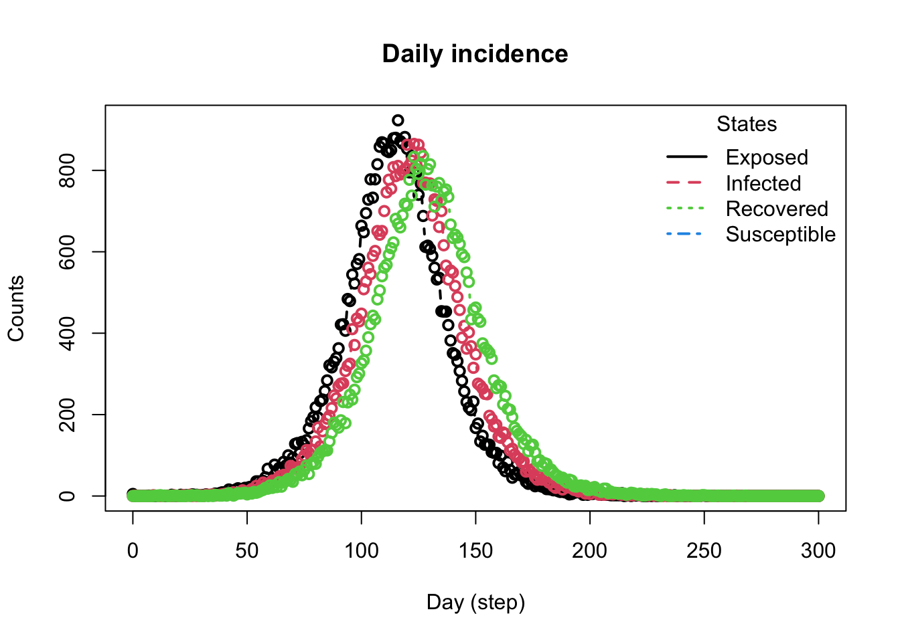
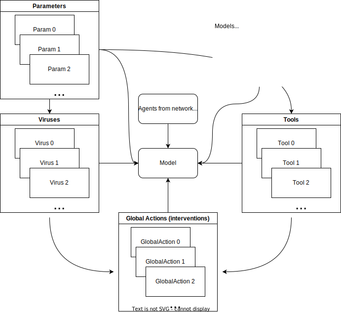

epiworldR is an R package that provides a fast (C++ backend) and highly-customizable framework for building network-based transmission/diffusion agent-based models [ABM]. Some key features of epiworldR are the ability to construct multi-disease models (e.g., models of competing multi-pathogens/multi-rumor,) design mutating pathogens, architect population-level interventions, and build models with an arbitrary number of compartments/states (beyond SIR/SEIR.)1
Let’s start right away with an example!
Motivating Example
Code
# Motivating examplelibrary(epiworldR)# Create a modelmodel <-ModelSEIRCONN(name ="Monkeypox",n =50000, prevalence =0.0001, contact_rate =4,incubation_days =7,transmission_rate =0.5,recovery_rate =1/7 ) # Changing contact rate for Isolation and TV advertisement isolation_day_10 <-globalevent_set_params("Contact rate", 2, day =10)advertisement_day_20 <-globalevent_set_params("Contact rate", 1.5, day =20)# Adding global actions to modeladd_globalevent(model, isolation_day_10)add_globalevent(model, advertisement_day_20)# Running and printing model summaryrun(model, ndays =60, seed =1912)
_________________________________________________________________________
|Running the model...
|||||||||||||||||||||||||||||||||||||||||||||||||||||||||||||||||||||||| done.
| done.
Code
summary(model)
________________________________________________________________________________
________________________________________________________________________________
SIMULATION STUDY
Name of the model : Susceptible-Exposed-Infected-Removed (SEIR) (connected)
Population size : 50000
Agents' data : (none)
Number of entities : 0
Days (duration) : 60 (of 60)
Number of viruses : 1
Last run elapsed t : 85.00ms
Last run speed : 35.15 million agents x day / second
Rewiring : off
Global events:
- Update infected individuals (runs daily)
- Set Contact rate to 2 (day 10)
- Set Contact rate to 1.5 (day 20)
Virus(es):
- Monkeypox
Tool(s):
(none)
Model parameters:
- Avg. Incubation days : 7.0000
- Contact rate : 1.5000
- Prob. Recovery : 0.1429
- Prob. Transmission : 0.5000
Distribution of the population at time 60:
- (0) Susceptible : 49995 -> 1836
- (1) Exposed : 5 -> 6121
- (2) Infected : 0 -> 9947
- (3) Recovered : 0 -> 32096
Transition Probabilities:
- Susceptible 0.95 0.05 0.00 0.00
- Exposed 0.00 0.86 0.14 0.00
- Infected 0.00 0.00 0.87 0.13
- Recovered 0.00 0.00 0.00 1.00
Code
plot(model)
Code
# Run the modelrun(model, ndays =100, seed =1912)
_________________________________________________________________________
Running the model...
||||||||||||||||||||||||||||||||||||||||||||||||||||||||||||||||||||||||| done.
done.
Code
model
________________________________________________________________________________
Susceptible-Exposed-Infected-Removed (SEIR) (connected)
It features 50000 agents, 1 virus(es), and 0 tool(s).
The model has 4 states.
The final distribution is: 318 Susceptible, 109 Exposed, 399 Infected, and 49174 Recovered.
Code
# Plot the modelop <-par(mfrow =c(2,2))plot_incidence(model)abline(v =20, col ="steelblue", lwd =2, lty =2)plot_reproductive_number(model)abline(v =20, col ="steelblue", lwd =2, lty =2)plot_generation_time(model)abline(v =20, col ="steelblue", lwd =2, lty =2)par(op)

General structure of epiworldR
epiworldR is a highly flexible framework for building agent-based-models. Although we do emphasize models of disease transmission, the framework is general enough to build models of any type of diffusion process. The general structure of epiworldR is as follows:

A brief overview of epiworldR
Example 1: Simulating a SIR model
Setup and running the model
This example implements the following scenario:
The disease name is specified (COVID-19),
50,000 agents are initialized,
the disease prevalence of 0.0001 is declared,
each agent will contact two others (contact_rate),
the transmission rate of the disease for any given agent is 0.5, and
the recovery rate is set to \(\frac{1}{3}\).
To create this model on epiworldR, we use the ModelSIRCONN() function. From here, the example will take you through the basic features of epiworldR.
Printing the model shows us some information. First, the name of the model, population size, number of entities (think of these as public spaces in which agents can make social contact with one another), the duration in days, number of variants, amount of time the last replicate took to run (last run elapsed t), and rewiring status (on or off). The next piece of information you will see is a list of the viruses used in the model. In this case, COVID-19 was the only disease used. Note that epiworldR has the capability to include more than one virus in a model. Tool(s) lists any tools that agents have to fight the virus. Examples ofthis may include masking, vaccines, social distancing, etc. In this model, no tools are specified. Lastly, the model parameters are listed, which originate from the parameters specified in the model.
Code
model_sirconn
________________________________________________________________________________
Susceptible-Infected-Removed (SIR) (connected)
It features 50000 agents, 1 virus(es), and 0 tool(s).
The model has 3 states. The model hasn't been run yet.
To execute the model, use the run function with the SIR model object, number of simulation days, and an optional seed for reproducibility. Next, print out the results from the simulated model using model_sir.
Code
run(model_sirconn, ndays =50, seed =1912)
_________________________________________________________________________
|Running the model...
|||||||||||||||||||||||||||||||||||||||||||||||||||||||||||||||||||||||| done.
| done.
Code
summary(model_sirconn)
________________________________________________________________________________
________________________________________________________________________________
SIMULATION STUDY
Name of the model : Susceptible-Infected-Removed (SIR) (connected)
Population size : 50000
Agents' data : (none)
Number of entities : 0
Days (duration) : 50 (of 50)
Number of viruses : 1
Last run elapsed t : 72.00ms
Last run speed : 34.46 million agents x day / second
Rewiring : off
Global events:
- Update infected individuals (runs daily)
Virus(es):
- COVID-19
Tool(s):
(none)
Model parameters:
- Contact rate : 2.0000
- Recovery rate : 0.3333
- Transmission rate : 0.5000
Distribution of the population at time 50:
- (0) Susceptible : 49995 -> 3346
- (1) Infected : 5 -> 6
- (2) Recovered : 0 -> 46648
Transition Probabilities:
- Susceptible 0.95 0.05 0.00
- Infected 0.00 0.67 0.33
- Recovered 0.00 0.00 1.00
There are two additional sections in the model summary after running the model object summary, the first being the distribution of the population at time 50. This section describes the flow of agents from each state (SIR) after 50 days. The counts for these states will of course, change based on model parameters or simulation run-time. The transmission probabilities section outputs a 3x3 matrix that describes the probability of moving from one state to another. Notice in all cases, there is a probability of 0 to skip states. In other words, it is impossible for an agent to move from the susceptible state to the recovered state; that agent must pass through the infected state in order to then progress to the recovered state. The same logic applies with moving backwards; an agent cannot become susceptible again after being infected.
Extracting Simulation Data
After running the epiworldR model, below is a list of all the functions that can be called using the epiworldR model object. To demonstrate, start with the basic plot and get_hist_total functions.
As evident from the above plot, the SIR model constructed from epiworldR displays the changes in susceptible, infected, and recovered case counts over time (days). Notice after a certain amount of time, the curves flatten. Below, a table representation of the above plot is printed, complete with each state within the SIR model, date, and agent counts.
Connected vs Non-connected Models
The above example uses a SIR connected model (ModelSIRCONN()), meaning that all agents in the model are connected with each other. When using a non-connected model (ex.ModelSEIR(), ModelSIR(), etc.), we do not assume that all agents in the model are connected with each other. Thus, a network of agents must be built using the agents_smallworld() function before running the model where:
- n = number of agents
- k = number of ties in the small world network
- d = whether the graph is directed or not
- p = probability of rewiring
epiworldR has a method to automatically plot the reproductive number. Thisfunction takes the average of values in the above table for each date and repeats until all date have been accounted for. For example, on average, individuals who acquired the virus on the 10th day transmit the virus to roughly 1.7 other individuals.
Code
x <-plot(repnum, type="b")
Exercise 1
Create a SEIR model using the ModelSEIR() function (not ModelSEIRCONN()) to simulate a COVID-19 outbreak for 100 days in a population with:
- prevalence = 0.01
- transmission_rate = 0.9
- recovery_rate = \(\frac{1}{4}\)
- incubation_days = 4
Then plot the model parameters to analyze changes in counts over time. When running the model, set seed = 1912.
To accomplish this for a SEIR model, you will need to add the model to a smallworld population using the agents_smallworld() function after initializing the model. From there, run the model and visualize. Assume:
- n = 10000
- k = 5
- d = FALSE
- p = .01
After how many days does the number of infections peak in this simulation? How many infections occur at the peak?
Code
# Your solution here
Exercise 2
Plot the reproductive number of the COVID-19 simulated SEIR model over 100 days.
Code
# Your solution here
Footnotes
This feature is currently under development. The repository of epiworld contains a branch with this feature.↩︎